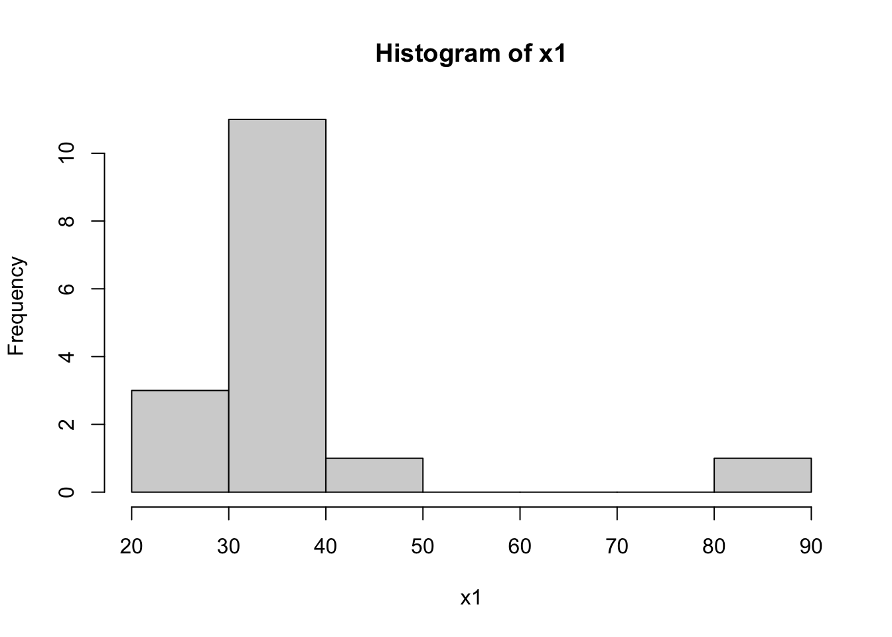
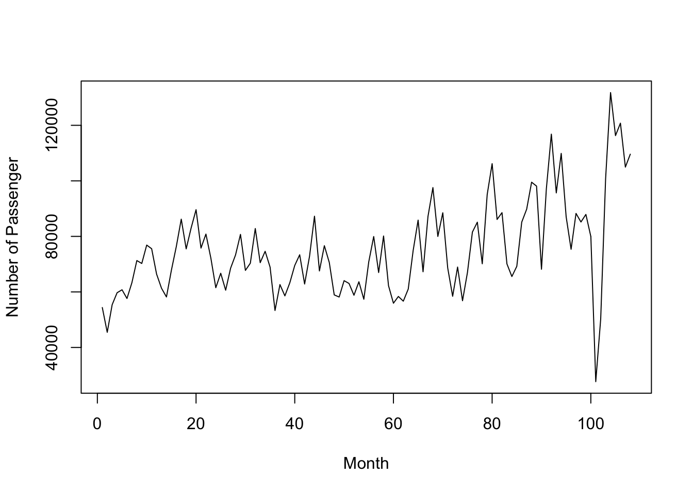

第 2 章 单样本位置参数
2.1 引入的例子：楼盘均价
##数据
x1 <- c(36, 32, 31, 25, 28, 36, 40, 32, 41, 26, 35, 35, 32, 87, 33, 35)
##单样本t检验
t.test(x1,mu=37)##
## One Sample t-test
##
## data: x1
## t = -0.14123, df = 15, p-value = 0.8896
## alternative hypothesis: true mean is not equal to 37
## 95 percent confidence interval:
## 28.95415 44.04585
## sample estimates:
## mean of x
## 36.5##直方图
hist(x1)
##向量计算
x1-37## [1] -1 -5 -6 -12 -9 -1 3 -5 4 -11 -2 -2 -5 50 -4 -2(x1<37)## [1] TRUE TRUE TRUE TRUE TRUE TRUE FALSE TRUE FALSE TRUE TRUE TRUE
## [13] TRUE FALSE TRUE TRUE##sign test
library(BSDA)## Loading required package: lattice##
## Attaching package: 'BSDA'## The following object is masked from 'package:datasets':
##
## OrangeSIGN.test(x1,md=37,alternative="two.sided",conf.level=0.95)##
## One-sample Sign-Test
##
## data: x1
## s = 3, p-value = 0.02127
## alternative hypothesis: true median is not equal to 37
## 95 percent confidence interval:
## 31.51725 36.00000
## sample estimates:
## median of x
## 34
##
## Achieved and Interpolated Confidence Intervals:
##
## Conf.Level L.E.pt U.E.pt
## Lower Achieved CI 0.9232 32.0000 36
## Interpolated CI 0.9500 31.5173 36
## Upper Achieved CI 0.9787 31.0000 36- 检验统计量\(S=\min\{S^+,S^-\}\),\(S^+=\#\{X>median\}\),\(S^-=\#\{X<median\}\);
- \(n=s^++s^-\);
- p值=\(2P(S\leq s)\)，\(S \sim B(n,0.5)\)
2*(1-pbinom(12,16,0.5)) #2P(S>=n-s)=2P(S>=13)=2[1-P(S<=12)]## [1] 0.021270752*pbinom(3,16,0.5) #2P(S<=s)=2P(S<=3)## [1] 0.02127075##wilcoxon signed rank test
wilcox.test(x1,mu=37,alternative="two.sided")## Warning in wilcox.test.default(x1, mu = 37, alternative = "two.sided"): cannot
## compute exact p-value with ties##
## Wilcoxon signed rank test with continuity correction
##
## data: x1
## V = 29.5, p-value = 0.04904
## alternative hypothesis: true location is not equal to 372.2 2.1 符号检验 Sign Test
2.2.1 2.1.1. 广义符号检验
2.2.1.1 SIGN.test只能处理中位数的问题
expens <- read.table(file="data/ExpensCities.TXT")
SIGN.test(expens$V1,md=64,alternative="two.sided",conf.level=0.95)##
## One-sample Sign-Test
##
## data: expens$V1
## s = 43, p-value = 0.09592
## alternative hypothesis: true median is not equal to 64
## 95 percent confidence interval:
## 63.28094 77.04644
## sample estimates:
## median of x
## 67.7
##
## Achieved and Interpolated Confidence Intervals:
##
## Conf.Level L.E.pt U.E.pt
## Lower Achieved CI 0.9432 63.5000 76.8000
## Interpolated CI 0.9500 63.2809 77.0464
## Upper Achieved CI 0.9681 62.7000 77.70002.2.1.2 自定义函数：广义符号检验
sign.test=function(x,p,q0){
s1=sum(x<q0);s2=sum(x>q0);n=s1+s2
p1=pbinom(s1,n,p);p2=1-pbinom(s1-1,n,p)
if (p1>p2){
m1="One tail test: H1: Q<q0"
}
else{
m1="One tail test: H1: Q>q0"
}
p.value=min(p1,p2);m2="Two tails test";p.value2=2*p.value
if (q0==median(x)){
p.value=0.5;p.value2=1
}
list(Sign.test1=m1, p.values.of.one.tail.test=p.value,
p.value.of.two.tail.test=p.value2)
}
sign.test(expens$V1,0.5,64)## $Sign.test1
## [1] "One tail test: H1: Q>q0"
##
## $p.values.of.one.tail.test
## [1] 0.04796182
##
## $p.value.of.two.tail.test
## [1] 0.09592363sign.test(expens$V1,0.25,64)## $Sign.test1
## [1] "One tail test: H1: Q<q0"
##
## $p.values.of.one.tail.test
## [1] 0.005151879
##
## $p.value.of.two.tail.test
## [1] 0.01030376- \(H_0:Q_{0.25} \geq 64 \leftrightarrow H_1:Q_{0.25} < 64\);
- 检验统计量\(S^-=\#\{X<q_0\}\),\(q_0=64\),\(n=s^++s^-\);
- 如果\(Q_{0.25} = q_0\)，应有\(S^- \sim B(n,0.25)\);
- 如果\(s^-\)的值较大，说明较多的值比\(q_0\)小，因此\(Q_{0.25} < q_0\);
- 此时，p值\(=P(S\geq s^-)=1-P(S\leq s^--1)\)，\(S \sim B(n,0.25)\)
2.2.2 2.1.2 分位点的置信区间
2.2.2.1 中位数的置信区间
tax <- read.table(file="data/tax.TXT")
(tax <- sort(tax$V1))## [1] 1.00 1.35 1.99 2.05 2.05 2.10 2.30 2.61 2.86 2.95 2.98 3.23 3.73 4.03 4.82
## [16] 5.24 6.10 6.64 6.81 6.86 7.11 9.00SIGN.test(tax,alternative="two.sided",conf.level=0.95)$Confidence.Intervals## Conf.Level L.E.pt U.E.pt
## Lower Achieved CI 0.9475 2.3000 5.2400
## Interpolated CI 0.9500 2.2861 5.2999
## Upper Achieved CI 0.9831 2.1000 6.10002.2.2.2 自定义函数（一）：中位数的置信区间
mci=function(x,alpha=0.05){
n=length(x)
b=0
i=0
while(b<=alpha/2&i<=floor(n/2)){
b=pbinom(i,n,.5);
k1=i;k2=n-i+1;
a=2*pbinom(k1-1,n,.5);
i=i+1
}
z=c(k1,k2,a,1-a);
z2="Entire range!"
if(k1>=1){
out=list(Confidence.level=1-a,CI=c(x[k1],x[k2]))
}
else{
out=list(Confidence.level=1-2*pbinom(0,n,.5),CI=z2)
}
out
}
mci(tax,alpha=0.05)## $Confidence.level
## [1] 0.9830995
##
## $CI
## [1] 2.1 6.12.2.2.3 自定义函数（二）：中位数的置信区间
mci2=function(x,alpha=0){
n=length(x);q=.5
m=floor(n*q);s1=pbinom(0:m,n,q);s2=pbinom(m:(n-1),n,q,low=F);
ss=c(s1,s2);nn=length(ss);a=NULL;
for(i in 0:m){
b1=ss[i+1];b2=ss[nn-i];b=b1+b2;d=1-b;
if((b)>1)break
a=rbind(a,c(b,d,x[i+1],x[n-i]))}
if(a[1,1]>alpha){
out="alpha is too small, CI=All range"
}
else{
for(i in 1:nrow(a)){
if(a[i,1]>alpha){out=a[i-1,];break}
}
}
out
}
mci2(tax,alpha=0.05)## [1] 0.01690054 0.98309946 2.10000000 6.100000002.2.2.4 分位数的置信区间
qci=function(x,alpha=0.05,q=.25){
x<-sort(x);n=length(x);a=alpha/2;r=qbinom(a,n,q);
s=qbinom(1-a,n,q);CL=pbinom(s,n,q)-pbinom(r-1,n,q)
if (r==0) lo<-NA else lo<-x[r]
if (s==n) up<-NA else up<-x[s+1]
list(c("lower limit"=lo,"upper limit"=up,
"1-alpha"=1-alpha,"true conf"=CL))
}
qci(tax,0.05,0.25)## [[1]]
## lower limit upper limit 1-alpha true conf
## 1.3500000 2.9800000 0.9500000 0.9751605qci(tax,0.06,0.25)## [[1]]
## lower limit upper limit 1-alpha true conf
## 1.350000 2.950000 0.940000 0.9556262.3 2.2 Wilcoxon符号秩检验(Wilcoxon Sign Rank)
2.3.1 2.2.1 检验
euroalc <- read.table(file="data/EuroAlc10.TXT")
y <- as.numeric(euroalc[1,])
y## [1] 4.12 5.81 7.63 9.74 10.39 11.92 12.32 12.89 13.54 14.45wilcox.test(y-8)##
## Wilcoxon signed rank exact test
##
## data: y - 8
## V = 46, p-value = 0.06445
## alternative hypothesis: true location is not equal to 0wilcox.test(y-8,exact = F)##
## Wilcoxon signed rank test with continuity correction
##
## data: y - 8
## V = 46, p-value = 0.06655
## alternative hypothesis: true location is not equal to 0wilcox.test(y-8,alt="greater")##
## Wilcoxon signed rank exact test
##
## data: y - 8
## V = 46, p-value = 0.03223
## alternative hypothesis: true location is greater than 0wilcox.test(y-12.5,alt="less")##
## Wilcoxon signed rank exact test
##
## data: y - 12.5
## V = 11, p-value = 0.05273
## alternative hypothesis: true location is less than 02.3.2 2.2.2 置信区间
2.3.2.1 Walsh平均
walsh=NULL;
for(i in 1:10){
for(j in i:10){
walsh=c(walsh,(y[i]+y[j])/2)
}
}
walsh=sort(walsh)
walsh## [1] 4.120 4.965 5.810 5.875 6.720 6.930 7.255 7.630 7.775 8.020
## [11] 8.100 8.220 8.505 8.685 8.830 8.865 9.010 9.065 9.285 9.350
## [21] 9.675 9.740 9.775 9.975 10.065 10.130 10.260 10.390 10.585 10.830
## [31] 11.030 11.040 11.155 11.315 11.355 11.640 11.640 11.920 11.965 12.095
## [41] 12.120 12.320 12.405 12.420 12.605 12.730 12.890 12.930 13.185 13.215
## [51] 13.385 13.540 13.670 13.995 14.4502.3.3 simulation study
Which of the two tests, the signed-rank Wilcoxon or the t-test, is the more powerful?
power_comparison <- function(mu){
n = 30; df = 2; nsims = 10000; collwil = rep(0,nsims)
collt = rep(0,nsims)
for(i in 1:nsims){
x = rt(n,df) + mu
wil = wilcox.test(x)
collwil[i] = wil$p.value
ttest = t.test(x)
collt[i] = ttest$p.value
}
powwil = rep(0,nsims); powwil[collwil <= .05] = 1
powerwil = sum(powwil)/nsims
powt = rep(0,nsims); powt[collt<= .05] = 1
powert = sum(powt)/nsims
list(powerwil,powert)
}
power_comparison(0)## [[1]]
## [1] 0.0501
##
## [[2]]
## [1] 0.0405power_comparison(0.5)## [[1]]
## [1] 0.4585
##
## [[2]]
## [1] 0.2902power_comparison(1)## [[1]]
## [1] 0.9211
##
## [[2]]
## [1] 0.69812.4 2.3 正态记分检验*(normal score)
- 线性符号秩统计量 \(S_n^+=\sum_{i=1}^n a_n^+(R_i^+) I(X_i>0)\)；
- \(a_n^+(i)=i\)时，\(S_n^+\)为Wilcoxon符号秩统计量\(W^+\)；
- \(a_n^+(i)=1\)时，\(S_n^+\)为符号秩统计量\(S^+\)；
- 线性秩统计量 \(S_n=\sum_{i=1}^n c_n(i) a_n(R_i)\)；
- \(N=m+n\),\(a_N(i)=i\),\(c_N(i)=I(i>m)\),则\(S_n\)为两样本Wilcoxon秩和统计量;
- 正态记分\(S_n=\sum_{i=1}^n \Phi^{-1}\left( \frac{R_i}{n+1} \right)\);
- 线性秩统计量的一个特例 \(S_n=\sum_{i=1}^n a_n^+(R_i^+) sign(X_i)=\sum_{i=1}^n s_i\)；
- 记分函数\(a_n^+(i)=\Phi^{-1}\left( \frac{n+1+i}{2n+2} \right)=\Phi^{-1}\left[\frac{1}{2} \left( 1 + \frac{i}{n+1} \right) \right]\),非负
- 检验\(H_0:Me=M_0\),\(X_i-M_0\)的秩\(r_i\),符号正态记分\(s_i=a_n^+(r_i) sign(X_i-M_0)=\Phi^{-1}\left[\frac{1}{2} \left( 1 + \frac{r_i}{n+1} \right) \right]sign(X_i-M_0)\)
ns=function(x,m0){
x1=x-m0;r=rank(abs(x1));n=length(x)
s=qnorm(.5*(1+r/(n+1)))*sign(x1);
tt=sum(s)/sqrt(sum(s^2));
list(pvalue.2sided=2*min(pnorm(tt),pnorm(tt,low=F)),Tstat=tt,s=s)
}
ns(y,8)## $pvalue.2sided
## [1] 0.05567649
##
## $Tstat
## [1] 1.913559
##
## $s
## [1] -0.6045853 -0.3487557 -0.1141853 0.2298841 0.4727891 0.7478586
## [7] 0.9084579 1.0968036 1.3351777 1.6906216ns(y,12.5)## $pvalue.2sided
## [1] 0.08114229
##
## $Tstat
## [1] -1.744096
##
## $s
## [1] -1.6906216 -1.3351777 -1.0968036 -0.9084579 -0.7478586 -0.3487557
## [7] -0.1141853 0.2298841 0.4727891 0.60458532.5 2.4 Cox-Stuart趋势检验*
- 判断增长或减少趋势
- 求差\(D_i=x_i-x_{i+c}\)的符号来衡量增减
- 像符号检验一样用到二项分布
TJair <- read.table(file="data/TJAir.TXT")
TJair <- as.vector(t(TJair))
plot.ts(TJair,xlab="Month",ylab="Number of Passenger")
D <- TJair[1:54]-TJair[55:108]
Splus <- sum(sign(D)==1)
Sminus <- sum(sign(D)==1)
K <- min(Splus,Sminus)
pbinom(K,54,.5)## [1] 0.0019191332.6 2.5 随机性的游程检验*
- 判断n重伯努利试验结果是否随机
- 称连在一起的0或1为游程
- 游程个数R的条件分布
2.6.0.1 自定义函数
runs.test0=function(y,cut=0){
if(cut!=0)x=(y>cut)*1 else x=y
N=length(x);k=1;
for(i in 1:(N-1))if (x[i]!=x[i+1])k=k+1;r=k;
m=sum(1-x);n=N-m;
P1=function(m,n,k){
2*choose(m-1,k-1)/choose(m+n,n)*choose(n-1,k-1)
}
P2=function(m,n,k){
choose(m-1,k-1)*choose(n-1,k)/choose(m+n,n)
+choose(m-1,k)*choose(n-1,k-1)/choose(m+n,n)
}
r2=floor(r/2);
if(r2==r/2){
pv=0;for(i in 1:r2) pv=pv+P1(m,n,i);
for(i in 1:(r2-1)) pv=pv+P2(m,n,i)
}
else{
pv=0
for(i in 1:r2) pv=pv+P1(m,n,i)
for(i in 1:r2) pv=pv+P2(m,n,i)
};
if(r2==r/2) pv1=1-pv+P1(m,n,r2) else pv1=1-pv+P2(m,n,r2);
z=(r-2*m*n/N-1)/sqrt(2*m*n*(2*m*n-m-n)/(m+n)^2/(m+n-1));
ap1=pnorm(z);ap2=1-ap1;tpv=min(pv,pv1)*2;
list(m=m,n=n,N=N,R=r,Exact.pvalue1=pv,
Exact.pvalue2=pv1,Aprox.pvalue1=ap1,Aprox.pvalue2=ap2,
Exact.2sided.pvalue=tpv,Approx.2sided.pvalue=min(ap1,ap2)*2)
}
run02 <- read.table(file="data/run02.TXT")
(run02 <- run02$V1)## [1] 12.27 9.92 10.81 11.79 11.87 10.90 11.22 10.80 10.33 9.30 9.81 8.85
## [13] 9.32 8.67 9.32 9.53 9.58 8.94 7.89 10.77runs.test0(run02,median(run02))## $m
## [1] 10
##
## $n
## [1] 10
##
## $N
## [1] 20
##
## $R
## [1] 3
##
## $Exact.pvalue1
## [1] 5.953799e-05
##
## $Exact.pvalue2
## [1] 0.9999892
##
## $Aprox.pvalue1
## [1] 0.0001185775
##
## $Aprox.pvalue2
## [1] 0.9998814
##
## $Exact.2sided.pvalue
## [1] 0.000119076
##
## $Approx.2sided.pvalue
## [1] 0.0002371551y <- factor(sign(run02-median(run02)),labels=c(0,1))